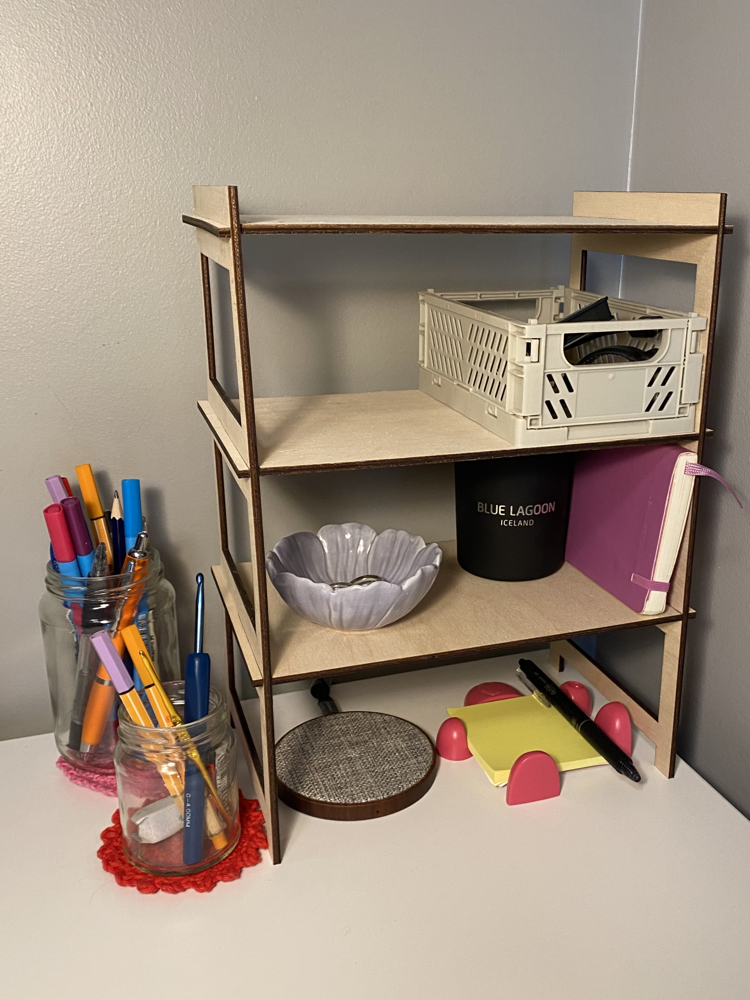

Hópaverkefni :
Veljið geislaskera og ákvarðið með prófunum kerf fyrir þann skera. Skjalfestið á ykkar persónulegu vefsíður.
Einstaklingsverkefni:
1. Notaðu vínylskerann til að búa til eitthvað 100x50cm skurðarflötur max
2. Hannaðu parametrískt geirnelgt módel af byggingareiningum. Módelið þarf að vera skalanlegt á mismunandi máta(efnisþykkt, hæðir og breiddir sem nemandi velur), útfært með parametrískum hugbúnaði að eigin vali.
Tölvustuddur skurður
- Kerf prófanir
-
Til að mæla kerf lazerskerans byrjuðum við á að teikna upp kassa með 14 línum í Fusion 360. Svo exportuðum við teikningunni sem dmx. skrá sem er hægt að opna í inkscape. Þar er línuþykktin stillt á eftirfarandi hátt og svo er hægt að prenta. Þegar er prentað þá stillti ég lazerskerann á 10% speed, 100% Power, 10% frequency og 4mm þykkt.

Svo er þetta prentað á krossviðinn. Svo mældum við bæði heildarlengdina á öllum kassanum og lengdina á litlu kössunum saman.


Lengdin á litlu kössunum er dregin frá heildarlengdinni og þeirri lengd svo deilt með fjöldi lína í kassanum. Í okkar tilfelli fengum við kerf upp á 0,18.
- Vínylskurður
-
Ég ákvað að teikna upp límmiða sem ég gæti sett á símann minn eins og hjarta sem skrifað er á lyklaborð. Ég skrifaði það inn í inkscape og svo prentaði ég það í vínylprentaranum á hvítan vínyl. Ég setti hvíta vínylinn í prentarann og valdi svo "Select sheet" og "EDGE" á prentaranum sjálfum og prentaði.

Svo setti ég límmiðann á símann minn en því miður festist hann ekki nógu vel og datt af og týndist áður en ég tók mynd.
- Lazerskurður
-
Til að byrja á lazerskurðarverkefninu byrjaði ég á að leita mér af innblástri á netinu. Ég skoðaði lengi vel áður en ég ákvað að teikna og skera út litla hillu til að hafa á skrifborðinu. Ég byrjaði þá á að sækja forritið Fusion 360 og horfa á tvö myndbönd á youtube síðu Fablab Akureyri. Svo byrjaði ég að teikna upp hlutinn minn og notaði parameters til að hafa hlutinn skalanlegann. Það er gert með því að velja "Change parameters" undir "Modify" í skissunni. Og hvert parameter er sett inn með því að smella á "User parameters" gluggann í hægra horni á pop-up glugganum. Hér má sjá alla parametrana sem ég setti inn fyrir mína teikningu.
Svo var það bara að klára teikninguna. Ég ákvað að ég vildi hafa 3 hillur í hillueiningunni minni og svo bætti ég við kössum á hliðarnar svo það sæjist inn um hliðarnar á henni.
Áður en ég prentaði þetta úr þá ákvað ég að teikna upp lítinn kassa til að mæla hvað bilið á pressfit fingrunum þyrfti að vera breitt til þess að hillurnar pössuðu vel inn í eininguna. Ég teiknaði hann upp í Fusion með 4 mismunandi bilum sem ég gat notað til að mæla við krossviðinn.
Þegar ég mátaði krossviðinn við þessi bil þá passaði best að hafa bil sem var 3,6mm svo ég setti kerfið sem 0,4 þar sem bilið á fingrinum mínum var sett sem þykkt - kerf. Þetta er mun stærra kerf en við mældum í upphafi en líklega voru krossviðsplöturnar ekki nákvæmlega 4 mm eins og gert var ráð fyrir. Þá gat ég loksins prentað út lokateikninguna.
